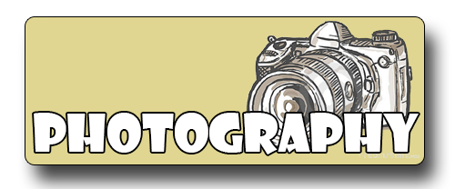

Momentcam
אפליקציית צילום הממירה את התמונות האמיתיות שלכם (שאתם בוחרים) לקרירטורות מגוונות.
אופן השימוש בה קל ונוח לתפעולגרסא: 2.0.1
מחיר: חינם


Facetune
אפליקציית הצילום שתגרום לכם לאהוב להצטלם גם כאשר אתם מרגישים שקמתם היום פחות יפים, או
שפתאם צץ לכם פצעון על הפנים.
גרסא:2.11
מחיר: 11.90

Afterlight
אפליקציה לעריכת התמונות המושלמת והמהירה.
בעלת עיצוב הפשוט, עם כלים רבי עוצמה, אשר יעניקו לך את המראה הרצוי בשניות.גרסא:2.1
מחיר 3.90

Aviary
אפליקציה חינמית לעריכת תמונות, נוחה, פשוטה לתפעול, עם עיצוב רענן.
נפרשות בפניך מגוון אפשרויותגרסא: 3.2.0
מחיר: חינם